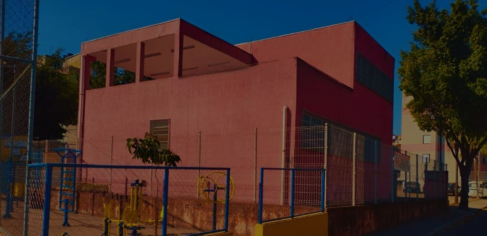
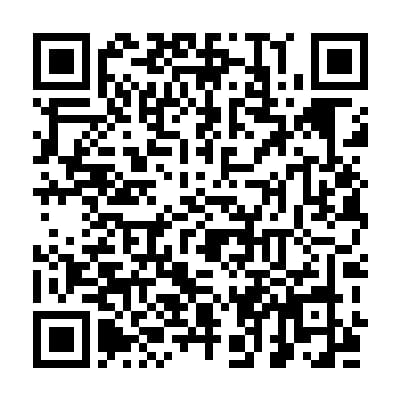
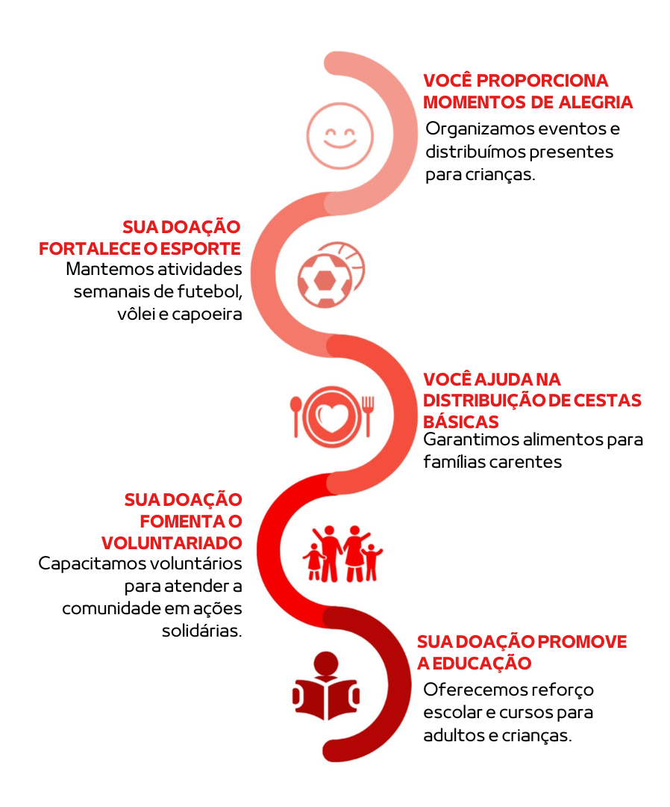

Apoie o projeto
Doações
Sua ajuda mantém atividades, materiais, estrutura e novas oportunidades para a comunidade.
Como funciona
Como sua doação ajuda
A Rede Liga do Bem é uma instituição sem fins lucrativos. Toda contribuição é direcionada para materiais, estrutura, eventos, atividades esportivas e necessidades dos projetos sociais.
Formas de apoio
Escolha como ajudar
Doação por Pix
Responsável: Silvana Mendes de Melo
Chave Pix: +55 11 98048-5370
Nome: LigadoBem
Confirmar pelo WhatsApp
Doação de itens físicos
Entre em contato para combinar roupas, alimentos, materiais esportivos ou outros itens úteis.
E-mail: contatoredeligadobem@gmail.com
Telefone: +55 11 98048-5370
Voluntariado e parcerias
Envie uma mensagem com o assunto “Voluntário” ou “Parceria” e conte como deseja contribuir.
Enviar e-mailImpacto
O poder da sua doação
